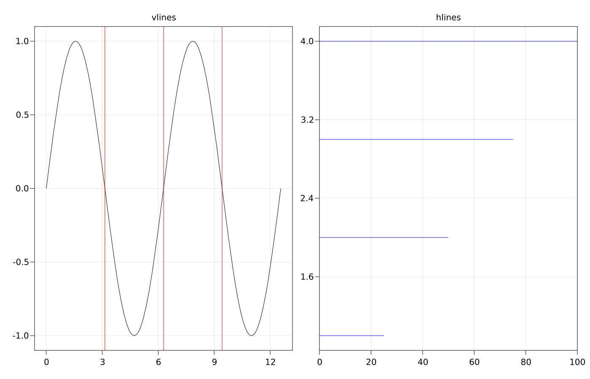

MakieLayout Special Plots
Vertical / Horizontal Lines
Often, it's useful to mark horizontal or vertical locations in a plot with lines that span a certain percentage of the axis, not the data. There are two functions hlines! and vlines! which work with LAxis instances.
The positional argument gives one or many locations in data coordinates, while the keyword arguments xmin and xmax (for hlines) or ymin and ymax (for vlines) specify the extent along the axis. These values can also be a single number or an iterable.
using AbstractPlotting
using AbstractPlotting.MakieLayout
scene, layout = layoutscene(resolution = (1400, 900))
ax1 = layout[1, 1] = LAxis(scene, title = "vlines")
lines!(ax1, 0..4pi, sin)
vlines!(ax1, [pi, 2pi, 3pi], color = :red)
ax2 = layout[1, 2] = LAxis(scene, title = "hlines")
hlines!(ax2, [1, 2, 3, 4], xmax = [0.25, 0.5, 0.75, 1], color = :blue)
scene
true